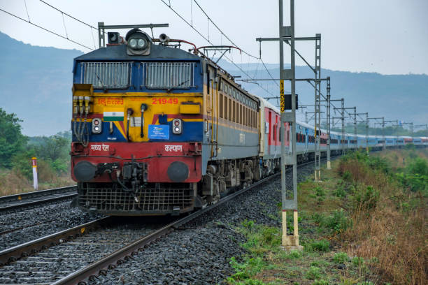
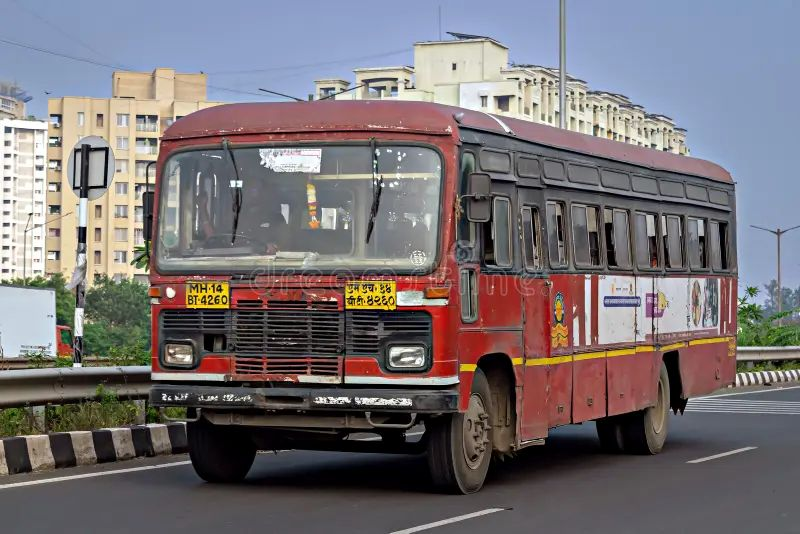

How to Reach Solapur
By Road
Solapur is well connected by highways to major cities such as Pune, Mumbai, Hyderabad, and Bengaluru. Regular government and private buses operate between these cities.
- Pune – 250 km
- Hyderabad – 300 km
- Mumbai – 400 km
- Bengaluru – 380 km
By Rail

Solapur Railway Station is a major railway junction. Many trains connect Solapur to cities like Mumbai, Pune, Hyderabad, Chennai, and Bengaluru. Rail travel is one of the most convenient ways to reach the city.
By Air

Solapur has a small airport but limited flight services. The nearest major airports are:
- Pune International Airport
- Hyderabad International Airport
Travelers can reach Solapur from these airports by road or train.
Local Transport
Visitors can move around the city using the following local transport options:
-
Auto Rickshaws

- Taxis
-
City Buses

Nearby pilgrimage towns like Pandharpur and Akkalkot are easily accessible by road.